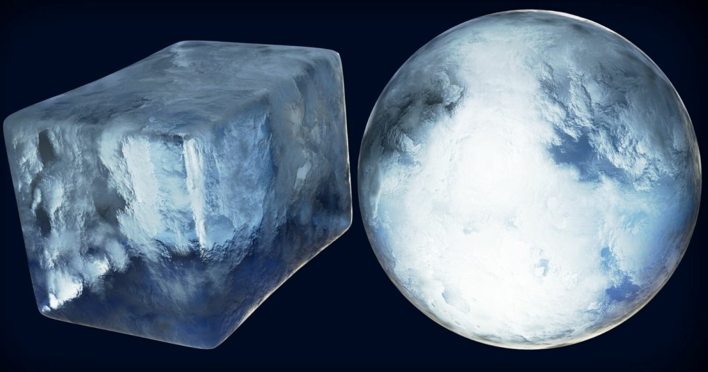

Blender Procedural Ice：Volume、Voronoi、Color Ramp 與 Displacement 封裝成可重用 Node Group
Ryan King 用 Volume 建立冰塊霧化核心，Voronoi 做不均表面，再以 Color Ramp、透明/反射與 Displacement 控制冰感，最後封裝 Node Group 讓 color、roughness、displacement 可快速調參。

Blender 技巧 ★★★★☆
完整分析
Shader 工作流
教學從幾何 bevel、燈光與背景開始，再以 Volume 製造冰塊中心的霧感、Voronoi 製造不規則表面，透過 Color Ramp 控制透光與玻璃感，最後用 Displacement 決定外形的 chunky 程度。重點是把常用控制收進 custom node group，而不是留下難維護的散亂節點。
製作價值
對遊戲美術來說，最可轉移的是可參數化材質模組思路：將色彩、roughness、displacement 等暴露成少量 art-friendly controls，能快速做冰塊變體，也能延伸到玻璃、晶體或半透明 stylized props，降低每個資產重新接 shader 的成本。
導入測試
在 Blender 先做三種冰材質 preset，再移植邏輯到 Unity／Unreal 測真正 runtime 成本，特別比較 volume、transmission 與 displacement 是否需要改成 cheaper approximation。教學目標偏離線外觀，不能直接假設節點結構可原封不動進即時引擎。